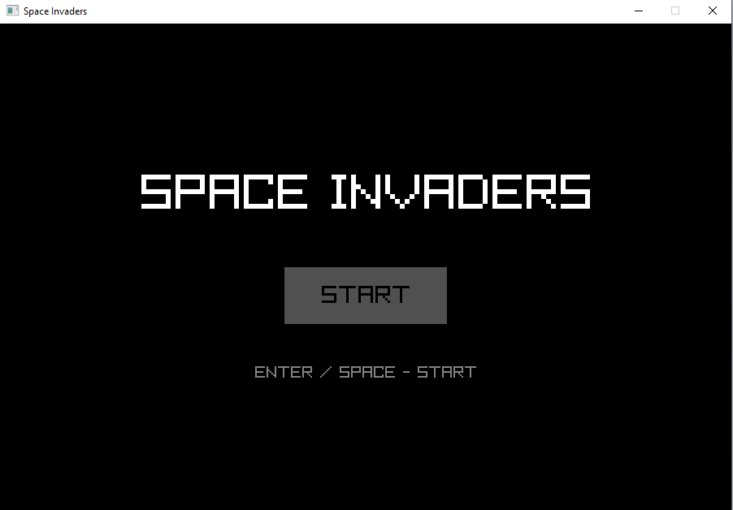
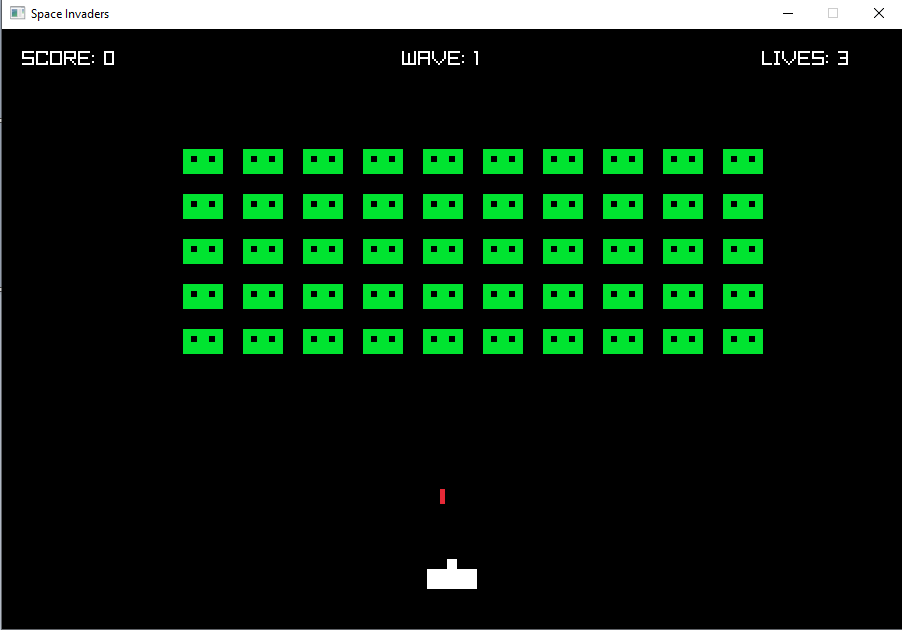
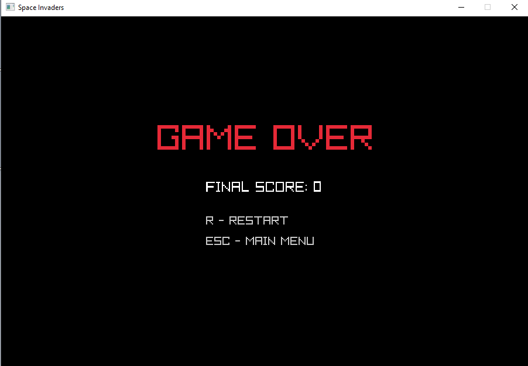
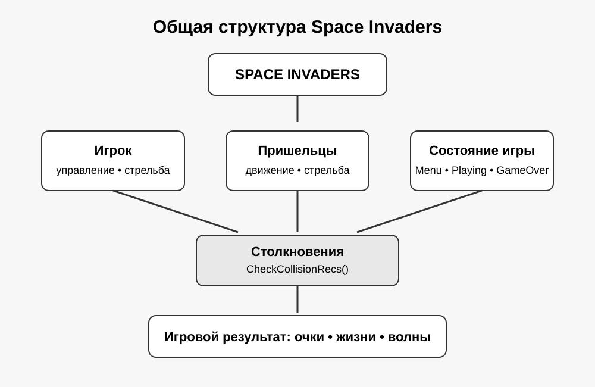
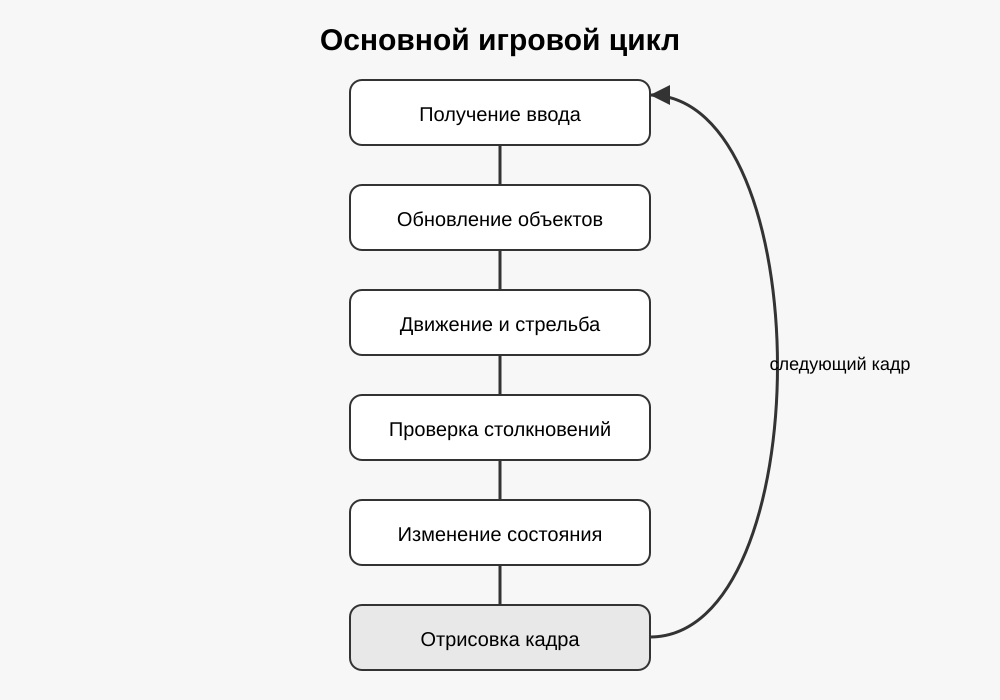
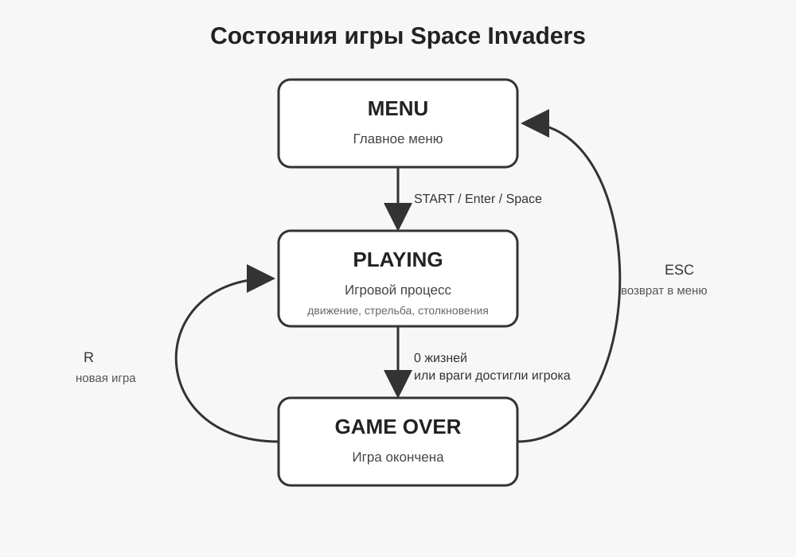
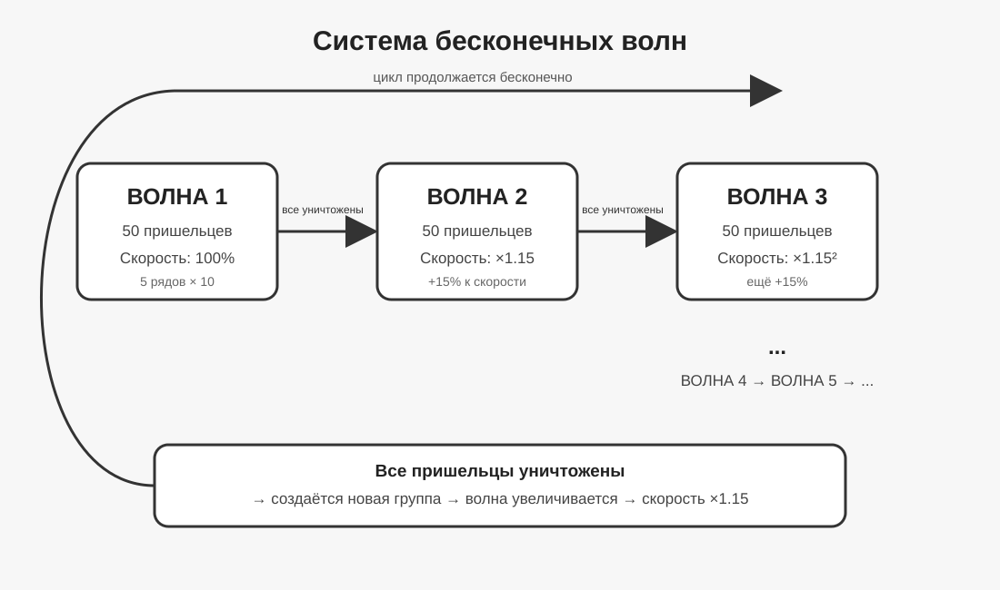

Медиа
Материалы проекта
В данном разделе представлены изображения, схемы и другие материалы, связанные с проектной практикой.
Основная часть визуальных материалов относится к практической реализации игры Space Invaders.
Скриншоты Space Invaders

Главное меню
Начальный экран игры с возможностью запуска игрового процесса.

Игровой процесс
Игровой экран с игроком, противниками, снарядами, очками и количеством оставшихся жизней.

Окончание игры
Экран Game Over, который появляется после потери всех жизней или достижения противниками нижней границы.
Технические схемы
Схемы используются для наглядного представления структуры программы и основных принципов работы игры.

Архитектура проекта
Основные компоненты проекта и их взаимодействие.

Игровой цикл
Последовательность обработки ввода, обновления объектов, столкновений и отрисовки кадра.

Состояния игры
Переходы между меню, игровым процессом и экраном Game Over.

Система волн
Принцип формирования последовательных волн противников и постепенного увеличения их скорости.
Видео
Видео-презентация проекта
Видеопрезентация содержит краткое описание проекта, демонстрацию работы игры и объяснение основных реализованных функций.
Видеопрезентация проекта Space Invaders
Визуальные материалы основного проекта
Для основного проекта информационной системы визуальные материалы представлены в виде описаний, схем и проектной документации. Они используются для объяснения функций системы и её предполагаемой структуры.